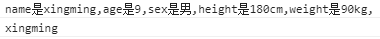

例：
<script>
var user = {
name:'xingshi',
age:9,
height:'180cm',
weight:'90kg'
}
for(var a in user){
console.log(a);
console.log(user[a])
}
</script>
a：是一个变量，对应对象里的每一个属性名；
user：要循环的对象；
user[a]：每一个属性对应的属性值。
var str = '';
for(var a in user){
str = str + a + '是' + user[a] + ',';
}

for(单次表达式；条件表达式；末尾循环体){
中间循环体；
}
单次表达式：可以省略，作为某一变量的初始化赋值语句，用来给循环控制变量赋初值，也可以用来计算其他与for循环无关但先于循环部分处理的一个表达式。条件表达式：是一个关系表达式，为循环的正是开端，当条件表达式成立时执行中间循环体。中间循环体：可以为一个语句，也可以为多个语句，当中间循环体只有一个语句时，{}可以省略，执行完中间循环体后执行末尾循环体。例：
<script>
for(var i = 0;i<10;i++){
if(i<5){
i += 3;
continue;
}else{
i += 2;
continue;
}
}
console.log(i);
</script>
最终i=11
循环流程：
i=0，0<10 ==> i=0, 0<5 ==> i=i+3=3 ==> i=i+1=4;i=4, 4<10 ==> i=4, 4<5 ==> i=i+3=7 ==> i=i+1=8;i=8, 8<10 ==> i=8, 8>5 ==> i=i+2=10 ==> i=i+1=11;i=11, 11>10 ==> 跳出循环，i=11例：
<script>
var a = 3;
while(a>0){
console.log(a);
a = a - 1
}
</script>
i ++是i=i+1
i += 2是i=i+2
i += 3是i=i+3